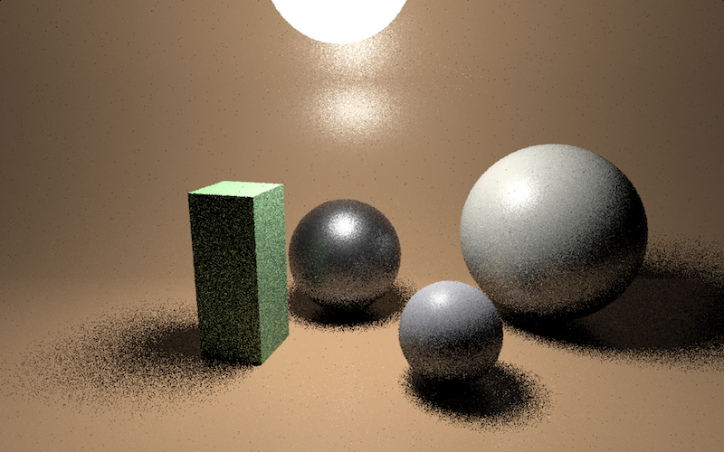

Direct-Lighting on Vulkan and Performance Analysis
Week1
Title, Summary and Team Members
This project improves the performance of the previous raytracing projects written in OpenGL. This project utilizes modern GPU technology and significantly shorten the rendering time. The work is done individually.
Problem Description
The previous OpenGL-based raytracer's problem is that it only uses CPUs whose performance is capped on the limited number of cores. A simple global illumination rendering takes several minutes, and this could be problematic when rendering complex scenes. Currently, all logics in the previous project assume we use CPUs, which means a fair amount of code must be optimized and rewritten. I will implement a vanilla raytracer using the previous project, PathTracer1, and Apple Metal Performance Shader2. In a nutshell, I will optimize and rewrite raytracing logics that push the GPU to its maximum limit.
Goals and Deliverables(Original)
Global illumination that supports GPU processing
Apple Metal Shader requires us to write code in either objective-c or swift, which means that I have to implement a path tracer from scratch. I will use OpenGL if this plan is not feasible in the given timeline.
Parallel logic implementation
In the previous project, we process pixels by pixels to compute the spectrum on the pixel, an iterative process. I will setup BVH as a readable GPU buffer. The tricky part is to remove recursion in global illumination. This part is something that I need to figure out later.
Performance Comparison
I will present the program's performance by measuring the rendering speedup and memory usage with increasing complexity. A table and chart will be provided.
Additional Shaders using Different Lighting
After improving the path tracer, I want to change lighting using different shaders. This task is something that I hope to deliver at the end of the semester.
Schedule(Original)
- Week1(8/1/2020 - 8/7/2020): Implement vanilla path tracer without GPU acceleration
- Week2(8/8/2020 - 8/14/2020): Add parallel logic, measure performance, and implement additional lighting
Week2
Status
Framework Selection
Initially, I was planning to implement a raytracer using the Apple Metal performance shader. However, it turned out that the Metal shader internally applied a ray intersection and bounding volume hierarchy. It would be suitable for rendering, but bad for learning. Worse yet, trying to understand the logic of a new language is time-consuming. Lastly, the Metal is not cross-platform, which traps me in one operating system. For this reason, I decided to work on Vulkan. The tutorial3 is very well written, and I was able to render a simple scene using a fragment shader.
Figure 1: 3D images using a fragment shader
shadertoy.com
As TA suggested, I began to dig shadertoy.com, especially following direct lighting examples.

Figure 2: Direct-Lighting with multiple importance sampling
I was amazed by this example because the lighting happens in real-time. I was curious about how this is possible. First, It turned out that the author hard-coded relatively simple objects into the fragment shader directly. It contains only three spheres and one box, and No bounding volume hierarchy was necessary. Secondly, it samples only one ray per pixel. As I increased the number of samples to 10, it became unbearably slow. Nevertheless, these examples are so different from what we covered in class, and I became interested in shader-only rendering. Because the shader toy does not give me control over the rendering engine, I decided to implement the local version using Vulkan.
Ray Tracing vs. Ray Marching
I also came across a different lighting algorithm, ray marching from https://www.shadertoy.com/view/lsVBRc What's the difference between ray tracing and ray marching? Ray tracing usually performs better when you have a large number of primitives. (CPU does an excellent job on this) On the other hand, ray marching typically computes less operation per intersection, which is useful for parallelization. If the data structure is a signed distance field4, it will take constant time and non-divergent. My goal is to compare their performance and grasp what they are capable of. For example, is raymarching good at volumic objects?
Adaptation & Changes
TODO Part 1: Local shadertoy.com and Vulkan graphics pipeline
I want to grasp how the Vulkan graphics pipeline works. To do that, I will implement a local version of shadertoy.com using Vulkan. Vulkan is very verbose, meaning that it contains tons of boilerplate that gives developers so much control. I will explore more and deliver what I have learned. The local version must compile and execute vertex and fragment shader.
TODO Part 2: Ray Tracing & Ray Marching Performance Analysis
This part contains the implementation of ray tracing and raymarching on a fragment shader. I will compare ray tracing and ray marching with different objects. (Direct lighting) CPU and GPU utilization will be analyzed, as well.
TODO Part 3: Real-Time Global Illumination
If time permits, I will try real-time global illumination with a complex object(bunny) on Vulkan. Currently, I find an algorithm that could utilize the GPU.
Resources
Computing platform
- Macbook Pro(2019)
- CPU: 2.6 GHz 6-Core Intel Core i7
- RAM: 16 GB 2667 MHz DDR4
- GPU: AMD Radeon Pro 5300M 4 GB
Online materials
- Vulkan Tutorial https://vulkan-tutorial.com/Introduction
- OpenGL Pathtracer Implemetation https://cal-cs184-student.github.io/p3-1-pathtracer-su20-heeh/
- Apple Metal Shader https://developer.apple.com/documentation/metalperformanceshaders/metal_for_accelerating_ray_tracing
- Direct Lighting MIS https://www.shadertoy.com/view/MsXfz4